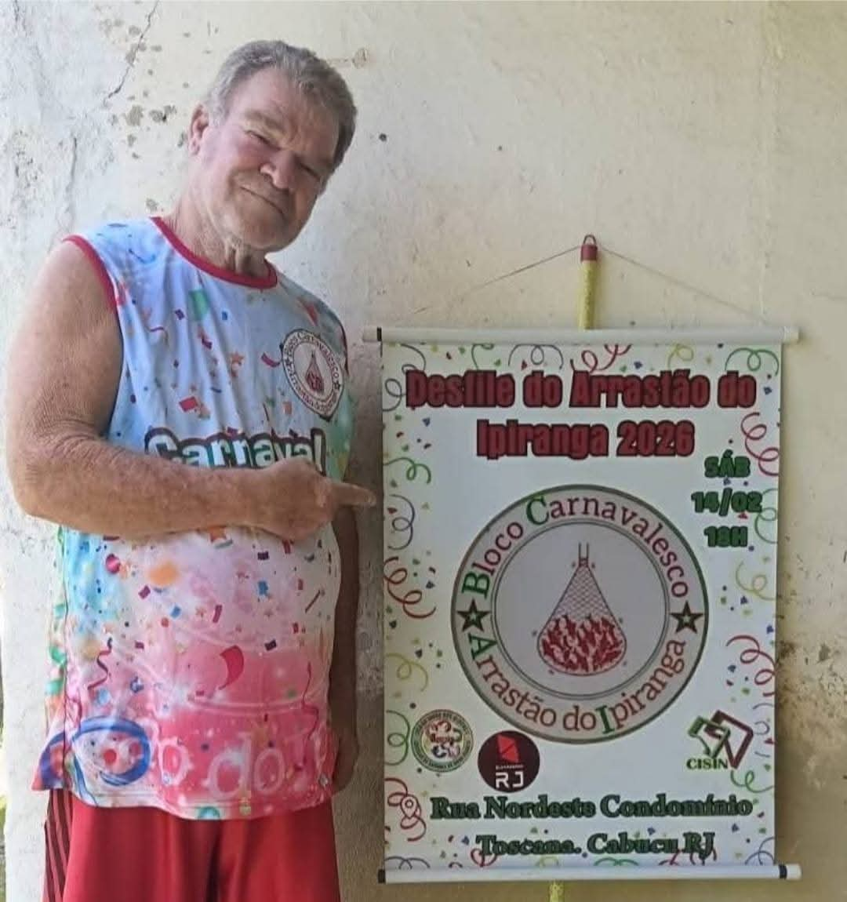

Cadastro cultural municipal deferido sob o número COL 2025/00016.
Bloco • LUBESNI
Bloco Arrastão
Um bloco de bairro com atuação recente documentada em Cabuçu e cadastro cultural municipal.
História
História
A LUBESNI confirma o Bloco Arrastão como agremiação ativa. No cadastro cultural municipal publicado em 2025, a entidade aparece como Bloco Carnavalesco Arrastão do Ipiranga.
O registro oficial de 2025 identifica Luiz Carlos Ponciano como representante do coletivo no processo de cadastramento cultural.

Memória e presença cultural
Trajetória
Marcos organizados a partir do acervo institucional e das fontes públicas indicadas nesta página.
Desfile em 14/02, às 18h, na Rua Nordeste, Condomínio Toscana, Cabuçu, conforme cartaz oficial preservado pela LUBESNI.
Rastreabilidade
Referências
As fontes abaixo sustentam a história e a trajetória apresentadas. O status de filiação ativa foi informado pela LUBESNI em agosto de 2026.
Diário Oficial de Nova Iguaçu — 25/11/2025
Dossiê Carnaval 2026
Informação institucional
Fundação, cores, descrição do símbolo, rede social e histórico anterior a 2025 estão em atualização pela LUBESNI.
Quando um dado ainda não possui confirmação documental recente, ele é apresentado como informação em atualização pela LUBESNI, sem preenchimento por suposição.